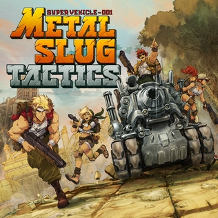

Metal Slug es una famosa serie de videojuegos de acción
y disparos tipo run and gun,
desarrollada originalmente
por la compañía japonesa SNK. Su primer título fue
lanzado en 1996 para la consola arcade Neo Geo y
rápidamente se convirtió en un clásico
por su estilo
único, jugabilidad frenética y gráficos en 2D con
animaciones detalladas y
un toque humorístico muy
característico.
En Metal Slug, los jugadores controlan a soldados de élite
que deben enfrentarse a ejércitos
enemigos, vehículos de
guerra, alienígenas y otros desafíos, todo mientras
rescatan
prisioneros de guerra que otorgan mejoras o armas especiales.
El nombre del juego proviene
del tanque característico que
los jugadores pueden pilotar, llamado precisamente
"Metal Slug".
La saga es conocida por:
- Su modo cooperativo para dos jugadores.
- Su mezcla de acción intensa con elementos cómicos.
- Un estilo artístico pixel art muy trabajado.
- Una historia sencilla pero entretenida, centrada en guerras ficticias y amenazas globales.
A lo largo de los años, Metal Slug ha tenido múltiples
entregas en diferentes plataformas,
manteniendo su esencia
arcade pero adaptándose a las nuevas tecnologías.
Sigue siendo muy querida por los fans de los juegos
retro y de acción clásicos 🎮🔥.
Últimas Noticias:
Metal Slug Tactics, el esperado spin-off de la legendaria saga Metal Slug, llegará en 2025 con un enfoque totalmente nuevo: la estrategia táctica por turnos. El juego mantiene el estilo pixel art característico, pero ahora los jugadores deberán planificar cuidadosamente cada movimiento en campos de batalla dinámicos. Con elementos roguelike y un elenco de personajes clásicos como Marco, Eri, Tarma y Fio, promete una experiencia desafiante y nostálgica. Está siendo desarrollado por Leikir Studio y publicado por Dotemu. ¡Una nueva forma de vivir la acción frenética del universo Metal Slug!
